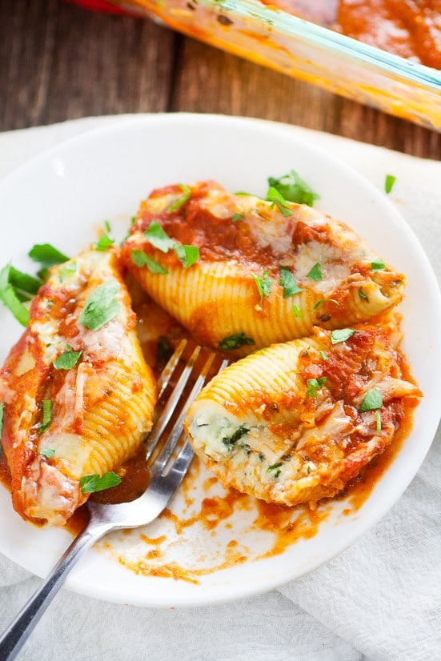

Stuffed Shells

Photo Credit
Description
This is a recipe from The Gracious Wife for 5 Cheese Stuffed Shells. This is a meatless recipe for vegetarians. It takes 20 minutes to prepare, 35 minutes to cook, and serves 10. If you love cheese, this recipe is for you.
Ingredients
- 20 jumbo pasta shells
- 1 TBSP olive oil
- 3-4 garlic cloves
- 4 cups coarsely chopped spinach
- one 12 oz container of ricotta
- 1 cup shredded mozzarella
- 1/2 cup grated Parmesan cheese
- 1/2 cup shredded Romano cheese
- 4 slices provolone cheese
- 1 egg
- 1 tsp Italian seasoning
- one 24 oz jar spaghetti sauce